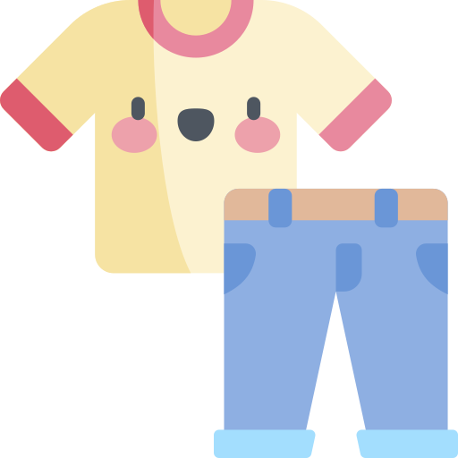
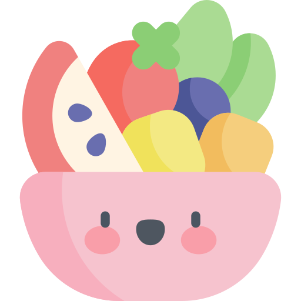
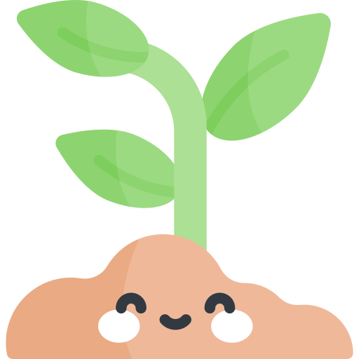

기후 실천 방법을 알려드립니다!
사소한 것이라도 좋습니다. 당신의 실천 하나하나가 우리 지구와 인류에 큰 도움이 됩니다.
01

의류 소비 줄이기
▼
유행에 따라 무수한 옷들이 빠르게 생산되고 버려지고 있습니다.
이렇게 버려지는 수많은 의류들은 폐기물이 될 뿐만 아니라 탄소 배출량도
기하급수적으로 증가시켜 기후에 악영향을 미칩니다.
우리 인류에게서 중요한 의식주 중 하나인 옷(衣)이기 때문에 완전히 소비를
하지 않을수는 없겠지요. 하지만 평소에 다섯 벌을 샀다면 세 벌, 이런 식으로
줄여보는 것은 어떨까요?
02
내 컵(다회용)으로 음료 마시기
▼
우리나라 직장인들은 평균적으로 하루 3개 이상의 종이컵을 이용한다고 합니다. 뿐만 아니라
1년 동안 커피숍에서 소비되는 종이컵의 양은 6억개를 넘는다고 하죠. 이는 26만 그루의 나무를
심어야 만들 수 있는 양입니다. 뿐만 아니라 재활용도 어려우며 자연에서 분해되기까지 수백년 이상이
걸리죠. 우리 모두 텀블러나 다회용컵을 구매하여 사용하는 습관을 들여보도록 합시다!
03
과대포장된 제품 사지 않기
▼
일부 물류센터에서는 포장과 출고 속도를 조금이라도 빠르게 하기 위해 과대포장을 한다고 합니다.
포장과 출고 속도가 빨라진다면 우리의 생활은 편리해지겠지만 그럼에도 우리는 말해야 합니다.
과대포장은 절대 안된다고! 먼저 불필요한 재료 소비로 인해 지출이 증가하며, 대량 폐기물 생산으로
인해 환경오염의 주범이 됩니다. 이들이 완전히 분해되기까지는 수천 년 이상의 시간이 걸리기 때문에
가급적 과대포장된 제품을 사지 마시고, 배달음식 주문과 온라인 쇼핑 횟수를 가능한 한 줄여봐요!
04

육류 소비 줄이기
▼
가축 사육은 다른 식량 생산에 비해 광활한 토지와 많은 물 등의 자원이 요구됩니다.
이는 삼림벌채, 주거지 파괴, 생물 멸종 등을 초래하는 주요 원인이 되지요.
소고기 1kg를 생산하는 데에 필요한 물은 무려 617리터입니다.
또한 가축의 소화·배설 과정에서 배출되는 메탄가스와 목초를 기르기 위해 뿌리는
비료에서는 질소산화물이 쏟아져 나옵니다. 전세계적으로 가축 사육과 사료 생산 과정에서
각각 30억톤 이상의 이산화탄소가 배출되죠. 완벽한 채식주의자는 되기 어렵지만
육류 소비를 지금보다 조금 더 줄인다면, 특히 소고기와 양고기의 소비를 줄인다면
환경에 많은 기여를 할 수 있습니다.
05
장바구니 사용하기
▼
비닐 쇼핑백이 완전히 분해되기까지 걸리는 시간은 약 20년 정도입니다.
그러나 우리나라에서는 비닐봉투가 분해될 때까지 기다릴 여건이 되지 않아 매립·소각하며,
비닐봉투 소각 시 이산화탄소와 다이옥신을 비롯한 환경오염 물질이 발생됩니다.
특히 다이옥신은 우리 몸 안으로 들어갈 경우 정상적인 호르몬 또는 효소 활동을 방해하여
발육, 면역기능, 생식 등에 장애를 일으킵니다. 우리 모두 비닐 쇼핑백을 퇴출시키고
장바구니를 적극 사용하도록 해요!
06
가까운 거리는 대중교통 이용하기
▼
2019년 기준, 대한민국에 등록된 자동차의 수는 무려 2,368만 대라고 합니다.
국민 두 명 중 한 명 꼴로 차를 갖고 있는 셈이죠. 이렇게 많은 차들이 뿜어내는 이산화탄소는
1년에 승용차 한 대당 무려 2톤 쯤 된다고 합니다. 가까운 거리라도 자가용 대신 대중교통을 이용한다면
환경에 많은 기여를 할 수 있겠죠? 준비물은 교통카드 한 장이면 됩니다. 우리 모두 가까운 거리는
대중교통을 이용하도록 해요! 걷거나 자전거를 탄다면 건강까지 챙길 수 있으니 일석이조?🥰
07

반려식물 키우기
▼
식물은 공기 중의 먼지와 오염 물질을 흡수합니다. 식물은 공기 중에 있는 오염 물질들을 뿌리
주변에 서식하는 미생물에 전달하는데 그 미생물들이 오염 물질을 분해시켜 공기의 질을 개선시켜주죠.
뿐만 아니라, 2018년 한국환경과학회지에 발표된 대학생 30명 대상 연구결과에 의하면, 반려식물을 3개월간 돌본
사람은 그렇지 않은 사람에 비해 우울 증상 등이 더 적었다고 합니다. 몸 뿐만이 아니라 마음에도 안정을 주는
반려식물 한 번 키워보실래요?🌱
08
 잔반 최대한 남기지 않기
▼
잔반 최대한 남기지 않기
▼
음식물 쓰레기는 처리 과정에서 환경오염과 막대한 경제적 손실이라는 결과를 낳습니다.
음식물 쓰리게는 수분과 유기물질로 구성되어 있어 부패하기 쉬우며 악취 및 침출수가 발생하여
생활환경 오염의 주범이 되죠. 음식물 쓰레기를 줄이기 위해서 필요한 것만 계획적으로 구매하도록
하고 외식할 때 도시락 박스를 챙겨서 남긴 음식을 포장해 오는 습관들 들입시다.
09
에너지 절약하기
▼
에너지의 형태 전환 시, 환경오염 물질이 배출될 수 밖에 없는데 그 중 이산화탄소는
온실가스가 되며 지구의 평균온도를 높이는 주범입니다. 여름철 실내온도는 26~29℃,
겨울철 실내온도는 18~20℃를 유지하고, 쓰지 않는 전기제품 플러그는 뽑아두고, 휴대폰이나
노트북 등의 휴대용 기기는 절전모드로 사용하는 습관을 들이도록 합시다!
10
기후위기에 대해 주위에 알리기
▼
우리 인류에게 두 번째 지구는 없을 것이며, 플랜 B 또한 존재하지 않습니다.
여전히 정부와 정치인, 기업들은 눈앞의 이익을 우선시하며 기후위기를 외면하고 있습니다.
당장 지구가 멸망하지는 않을 것이며, 지금 당장은 우리와 관련 없는 것 같은 기후위기,
과연 5년 후에도, 10년 후에도 그럴까요? 기후위기에 대한 오해를 바로 잡아주세요.
여러분들이 가지고 있는 SNS 계정 하나로도 충분히 할 수 있습니다. 기후위기에 대해
주위에 알려주세요.